Hướng dẫn làm việc hằng tuần trên web: dựng lớp, xếp lịch Mock Test, duyệt yêu cầu, theo dõi giáo viên và học viên.
Bản 02/10/2026 · Dùng cho Quản lý chi nhánh Ảnh minh hoạ chụp từ bản demo; tên học viên và dữ liệu trong ảnh là dữ liệu giả.
Cách dùng sổ tay này
Mỗi mục trả lời một câu hỏi: bạn cần làm gì, bấm ở đâu, và web sẽ chặn hay nhắc điều gì. Sổ tay xếp theo việc bạn làm trong tuần, không theo thứ tự menu.
Cách đọc ảnh. Mỗi ảnh có 1 số đỏ khoanh trên màn hình. Danh sách dưới ảnh cho biết từng số là gì hoặc bấm để làm gì. Khung vàng "Luật cần nhớ" là điều web bắt buộc hoặc hạn bạn phải đúng. Khung đỏ "Lưu ý" là chỗ dễ nhầm.
Sổ này chỉ nói phần khác với giáo viên. Việc nhập điểm, Case, PA và Ý thức ở cấp giáo viên nằm trong Sổ tay Giáo viên; Quản lý làm được mọi việc giáo viên làm, trong phạm vi chi nhánh của mình.
Xem số liệu Test, SOS, hiệu quả PA, Ý thức, giáo viên
5.2 – 5.4
Giao việc vận hành, nộp báo cáo đơn vị hằng tuần
6.1 – 6.2
Sửa điểm, lịch hoặc Target đã nhập sai
Phần 7
Biết hạn của từng việc, ai làm được gì
Phụ lục A, B
Phần 0. Bắt đầu
0.1 Vai Quản lý
Web chỉ có ba vai: Quản trị hệ thống, Quản lý (QL) và Giáo viên. Quản lý làm việc trong phạm vi chi nhánh của mình; Quản trị hệ thống thấy mọi chi nhánh và là vai riêng, không nằm trong sổ này. Nếu bạn vừa là Quản lý vừa dạy lớp, bạn có thêm quyền của giáo viên ở các lớp đó.
Thanh trên có bốn mục: Tổng quan, Học viên & Lớp, Test, Công việc. Số đỏ cạnh Công việc là số thẻ đang chờ bạn trong hộp Chờ duyệt. Menu tài khoản chỉ có Hồ sơ cá nhân và Đăng xuất.
Luật cần nhớ
Tuần chạy từ Thứ Hai đến Chủ nhật. W3 SEP là tuần thứ 3 của tháng 9. Ngày cụ thể chỉ hiện cho hạn, ngày thi, ngày sinh và nhật ký.
Mọi hạn "n ngày" là ngày lịch liên tiếp, tính cả ngày đầu. Không có "ngày làm việc".
Em đang Tạm dừng: mọi hạn của em dừng, việc ẩn, không bao giờ quá hạn.
0.2 Tổng quan: việc hôm nay
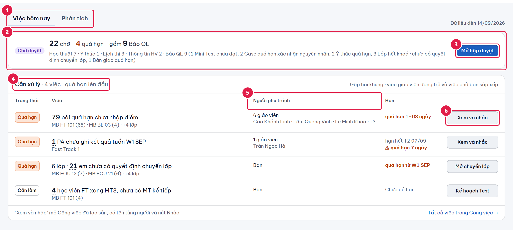
Tổng quan › Việc hôm nay
1Hai tab của Tổng quan: "Việc hôm nay" và "Phân tích".
2Dải "Chờ duyệt": tổng số thẻ đang chờ, số quá hạn và số thẻ Báo QL; dòng dưới chia theo phân loại.
3Bấm "Mở hộp duyệt" để vào Công việc › Chờ duyệt.
4"Cần xử lý": việc giáo viên đang trễ và việc chờ bạn sắp xếp, quá hạn xếp trên cùng.
5Cột "Người phụ trách": giáo viên đang giữ việc, hoặc "Bạn".
6"Xem và nhắc" mở Công việc đã lọc sẵn, có tên từng người và nút Nhắc.
Mở web là vào Tổng quan. Đọc theo thứ tự từ trên xuống:
Dải Chờ duyệt: bao nhiêu thẻ đang chờ bạn, bao nhiêu đã quá hạn, bao nhiêu là thẻ Báo QL (chỉ để biết và nhắc). Bấm Mở hộp duyệt để xử lý.
Cần xử lý: gộp việc giáo viên đang trễ và việc chờ bạn sắp xếp (ví dụ lớp hết khoá còn em chưa có lệnh chuyển). Quá hạn xếp trên cùng. Cột Người phụ trách cho biết ai đang giữ việc.
Nút cuối dòng đưa bạn tới đúng chỗ: Xem và nhắc mở Công việc đã lọc sẵn, Mở chuyển lớp và Kế hoạch Test mở màn xử lý.
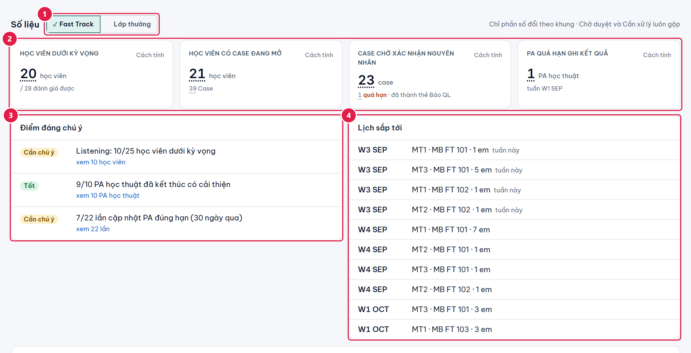
Tổng quan › Số liệu
1Công tắc khung: Fast Track hoặc Lớp thường. Chỉ phần Số liệu đổi; Chờ duyệt và Cần xử lý luôn gộp cả hai.
2Bốn ô số liệu chính; bấm con số để mở danh sách học viên hoặc Case.
3"Điểm đáng chú ý": điều web thấy cần chú ý, bấm để mở danh sách.
4"Lịch sắp tới": các đợt Test trong ba tuần tới.
Phía dưới là Số liệu. Công tắc Fast Track | Lớp thường chỉ đổi phần số; Chờ duyệt và Cần xử lý luôn gộp cả hai. Con số nào gạch chân đều bấm được để mở danh sách học viên hoặc Case.
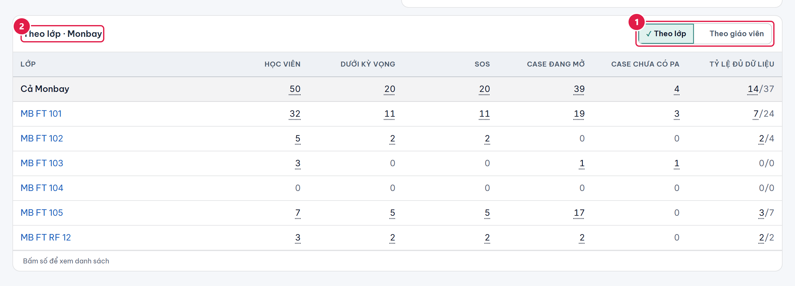
Tổng quan › Theo lớp / Theo giáo viên
1Công tắc "Theo lớp | Theo giáo viên".
2Bảng theo từng lớp của chi nhánh; số trong ô bấm được.
Cuối trang là bảng Theo lớp, đổi sang Theo giáo viên bằng công tắc ở đầu bảng. Muốn xem một giáo viên kỹ hơn, bấm tên họ (mục 5.4).
Phần 1. Nhịp một tuần
Ngày
Điều xảy ra
Bạn cần làm
Thứ Hai
Sáng sớm web chốt dấu "-" của tuần trước (Fast Track); các lệnh chuyển lớp tự chạy; là hạn ghi kết quả PA của giáo viên.
Xem bài vừa bị chốt "Không dự thi", đề nghị dời lần 2 mới, em vừa chuyển lớp.
Giữa tuần
Giáo viên nộp thẻ xin duyệt; hạn chấm Fast Track là Thứ Tư.
Duyệt thẻ, nhắc giáo viên trễ việc.
Chủ nhật
Hết hạn đề nghị dời lịch lần 2 của tuần gửi; hết hạn sửa dấu "-".
Trả lời mọi đề nghị dời lần 2; nếu không, phần thi bị huỷ.
Cuối tuần
Cửa sổ nộp Báo cáo đơn vị mở từ Thứ Bảy đến hết Chủ nhật.
Nộp báo cáo các đơn vị (mục 6.2).
Phần 2. Dựng lớp và học viên
2.1 Tạo lớp và phân công
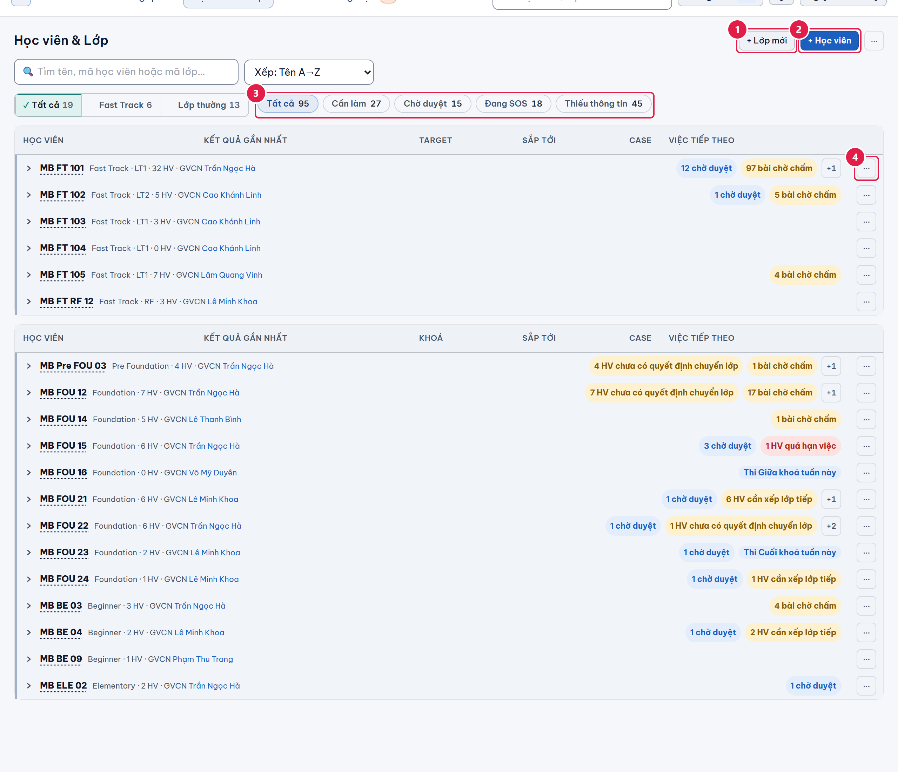
Học viên & Lớp (Quản lý)
1"+ Lớp mới": tạo lớp và phân công giáo viên.
2"+ Học viên": thêm học viên vào một lớp.
3Chip lọc có thêm "Chờ duyệt" cho Quản lý.
4Nút ⋯ của lớp: "Chuyển lớp…", "+ Học viên", sửa phân công.
Ở Học viên & Lớp, Quản lý có thêm nút + Lớp mới, chip lọc Chờ duyệt và các nhãn riêng trên hàng lớp (ví dụ "Thiếu GV", "n HV cần xếp lớp tiếp").
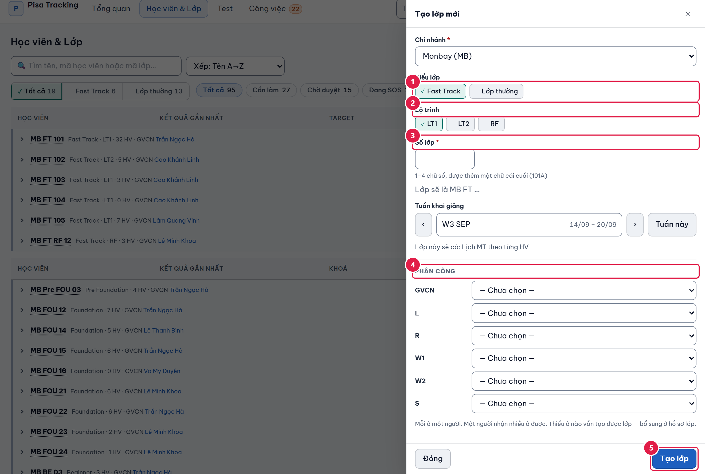
Panel "Tạo lớp mới"
1Chọn Fast Track hoặc Lớp thường.
2Fast Track chọn lộ trình (LT1, LT2, RF); lớp thường chọn chương trình (FOU, BE, ELE).
3Số lớp (1–4 chữ số); web hiện trước mã lớp sẽ tạo.
4Khối "Phân công": một môn một người, GVCN phải dạy ít nhất một môn.
5Bấm "Tạo lớp" khi phân công hợp lệ (nút mờ và có chú thích khi chưa đủ).
Luật cần nhớ
Một môn một người; một người nhận được nhiều môn. GVCN phải dạy ít nhất một môn của lớp.
Lớp thường FOU thường có 2 giáo viên: một người L · R · G+V, một người P. Pre FOU chỉ có GVCN (web tự gán ô Tổng hợp). BE và ELE mỗi môn một người.
Nút "Tạo lớp" mờ khi phân công vi phạm luật; di chuột vào để xem còn thiếu gì. Thiếu giáo viên một ô vẫn tạo được lớp, bổ sung sau ở hồ sơ lớp.
Lớp đã có học viên không đổi được chương trình.
2.2 Thêm học viên
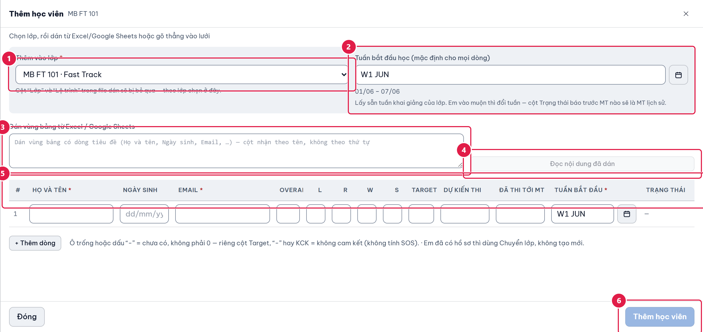
Panel "Thêm học viên"
1Chọn lớp ở ô "Thêm vào lớp" (đã chọn sẵn lớp đang mở).
2Ô "Tuần bắt đầu học (mặc định cho mọi dòng)": lấy sẵn tuần khai giảng của lớp; em vào muộn thì đổi tuần.
3Dán vùng bảng từ Excel / Google Sheets vào đây; bảng phải có dòng tiêu đề "Họ và tên".
4Bấm "Đọc nội dung đã dán" để đưa dữ liệu vào lưới bên dưới.
5Lưới nhập: gõ thẳng từng em; cột "Trạng thái" báo dòng lỗi hoặc lưu ý cho từng dòng.
6Bấm "Thêm n học viên" để lưu khi mọi dòng đã sẵn sàng (nút mờ khi chưa có dòng hợp lệ).
Mở bằng + Học viên ở đầu trang hoặc ở menu ⋯ của lớp. Quản lý thêm được cho mọi lớp trong chi nhánh (GVCN chỉ lớp mình chủ nhiệm).
Dán bảng từ Excel hoặc Google Sheets: bảng phải có dòng tiêu đề chứa "Họ và tên". Email bắt buộc khi thêm mới.
Dòng lỗi ở lại trong panel, không khoá cả lô: sửa dòng đó rồi thêm tiếp.
Lớp Fast Track: nhập Target (hoặc KCK nếu em không cam kết) và tuần bắt đầu. Web tự tạo MT1–MT3 theo tuần học 6, 12, 16 (lộ trình RF: MT1, MT2 ở tuần 4, 8). Em vào muộn thì các MT đã qua thành MT lịch sử.
Target KCK: không có kỳ vọng, không SOS tự động (không Case, PA quy chế, Phối hợp). Em vẫn có lịch MT, nhập điểm, Case tạo tay và Ý thức.
2.3 Sửa thông tin; đổi Target và lộ trình
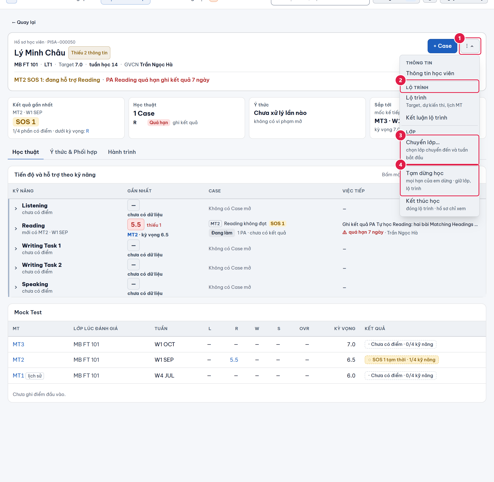
Hồ sơ học viên: menu ⋮ của Quản lý
1Menu ⋮ của Quản lý.
2"Lộ trình": đổi Target hoặc KCK, thi dự kiến, điểm đầu vào (chỉ Quản lý).
3"Chuyển lớp…": ra lệnh chuyển lớp cho em.
4"Tạm dừng học", "Kết thúc học", "Lưu trữ": hiệu lực ngay.
Menu ⋮ trên hồ sơ học viên của Quản lý có đủ các mục: Thông tin học viên, Lộ trình, Kết luận lộ trình, Chuyển lớp…, Tạm dừng học, Quay lại học, Kết thúc học, Lưu trữ.
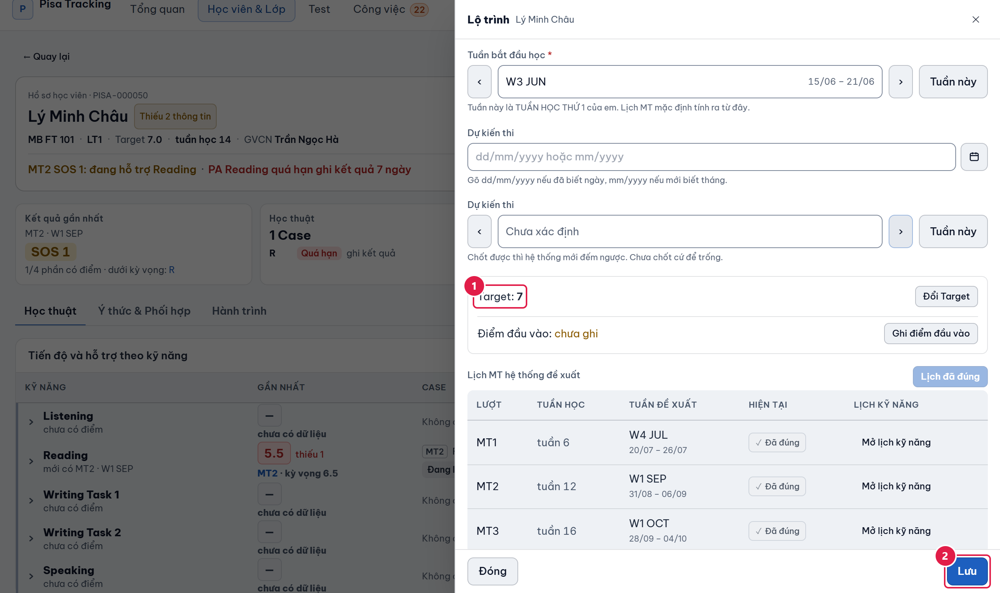
Panel "Lộ trình" của học viên
1Đổi Target (hoặc KCK) của em. Chỉ Quản lý đổi được; GVCN chỉ đề xuất.
2Bấm "Lưu" sau khi ghi lý do và ngày hiệu lực.
Luật cần nhớ
Chỉ Quản lý đổi Target và lộ trình, kèm lý do và ngày hiệu lực. GVCN bấm Đề xuất sửa (lý do từ 15 ký tự); thẻ đó nằm ở hộp Chờ duyệt, phân loại "Thông tin HV".
GVCN vẫn tự sửa họ tên, ngày sinh, email, tuần bắt đầu và thi dự kiến.
Đổi giữa lộ trình LT và RF là mở lộ trình mới: Target giữ nguyên, Case đang mở đi theo em.
2.4 Tạm dừng, bảo lưu, dừng học, lưu trữ
Tạm dừng học và Kết thúc học có hiệu lực ngay (GVCN cũng làm được). Em Tạm dừng không mở được chuyển lớp: bấm Quay lại học trước. Lưu trữ học viên là việc của Quản lý. Xoá hẳn học viên hay lớp là việc của Quản trị hệ thống.
2.5 Chuyển lớp: Quản lý ra lệnh
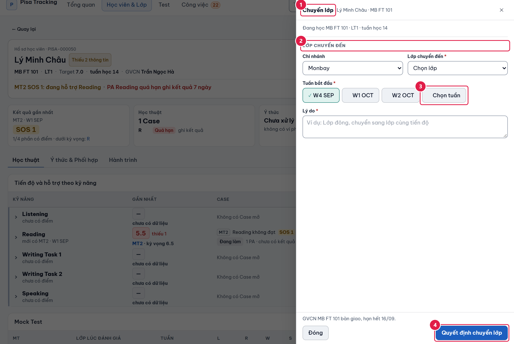
Panel "Chuyển lớp" cho một học viên
1Đầu panel: tên em và lớp hiện tại.
2Chọn chi nhánh và lớp chuyển đến (bắt buộc).
3Chọn tuần bắt đầu: Thứ Hai, từ tuần sau trở đi.
4Bấm "Quyết định chuyển lớp" để ra lệnh; lệnh tự chạy sáng Thứ Hai ở tuần bắt đầu.
Mở hồ sơ em, ⋮ › Chuyển lớp… (hoặc ⋯ › Chuyển lớp… ở danh sách).
Chọn chi nhánh và lớp chuyển đến. Các hướng đi (lên lớp · học lại · FT · chuyển lớp · bảo lưu · dừng học) hiện rõ hơn ở bảng chuyển tiếp cả lớp (mục 2.6); bảo lưu và dừng học không có lớp đích.
Chọn tuần bắt đầu (Thứ Hai, từ tuần sau trở đi).
Bấm Quyết định chuyển lớp ở chân panel.
Luật cần nhớ
Chỉ Quản lý ra lệnh. Lệnh tự chạy vào sáng Thứ Hai của tuần bắt đầu. GVCN chỉ đề xuất chuyển lớp; bạn bấm "Duyệt…" trên thẻ để mở panel điền sẵn rồi ra lệnh.
Chọn khác "Web gợi ý" thì phải ghi lý do. Lên FT bắt buộc có Target (hoặc KCK). Mỗi em tối đa một lệnh chờ.
Em thiếu điểm Cuối khoá vẫn chuyển được; điểm nhập sau áp luật Cuối khoá ở lộ trình mới.
Dừng học không có phiếu bàn giao; các hướng khác có. Bàn giao quá hạn không chặn việc chuyển: lệnh vẫn chạy đúng tuần.
Khác chi nhánh: Quản lý chi nhánh nguồn quyết định, chi nhánh đích nhận thông báo "Sắp nhận".
Lưu ýLệnh còn "chờ" hiện vẫn sửa hoặc huỷ được bằng nút Huỷ lệnh ở mọi lúc, kể cả sát Thứ Hai. Kế hoạch ban đầu chỉ cho huỷ trước tuần bắt đầu; điểm này đang chờ chủ sản phẩm xác nhận.
2.6 Chuyển cả lớp khi hết khoá
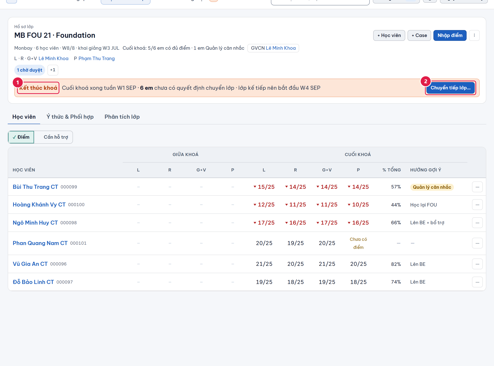
Hồ sơ lớp hết khoá: dải đỏ và nút "Chuyển tiếp lớp…"
1Dải đỏ báo lớp tới tuần kết thúc và còn bao nhiêu em chưa có lệnh chuyển.
2"Chuyển tiếp lớp…" mở bảng ra lệnh cho từng em.
Lớp thường tới tuần kết thúc hiện dải đỏ "Kết thúc khoá · n em chưa có lệnh chuyển". Bấm Chuyển tiếp lớp…. Cũng có dòng nhắc ở Cần xử lý trên Tổng quan và thẻ Báo QL trong hộp Chờ duyệt.
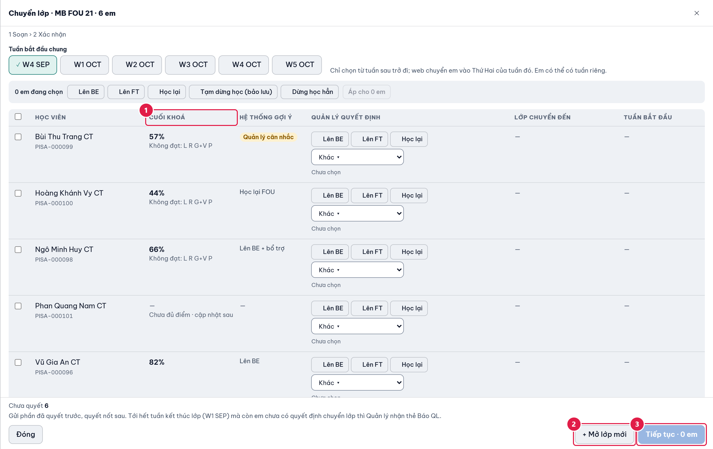
Panel "Chuyển lớp" cả lớp (bước 1)
1Mỗi em một dòng: chọn hướng đi, lớp đích; cột kết quả Cuối khoá giúp quyết định.
2"+ Mở lớp mới" tạo ngay lớp đích nếu chưa có.
3"Tiếp tục · n em" sang bước xem lại, rồi "Gửi lệnh chuyển n em".
Bước 1 Soạn: chọn Tuần bắt đầu chung (chỉ từ tuần sau trở đi; em có thể có tuần riêng). Với mỗi em, bấm hướng đi: Lên BE · Lên FT · Học lại, hoặc chọn trong ô "Khác" (Tạm dừng học (bảo lưu), Dừng học hẳn). Cũng có thể tích nhiều em rồi bấm một hướng và Áp cho n em.
Cột Cuối khoá cho % tổng và môn không đạt; cột Hệ thống gợi ý cho hướng web đề nghị (chip "Quản lý cân nhắc" nghĩa là bạn quyết). Chưa có lớp đích thì bấm + Mở lớp mới.
Bấm Tiếp tục · n em sang bước 2 Xác nhận, xem lại rồi gửi lệnh. Có thể gửi trước phần đã quyết, quyết nốt sau; mỗi lệnh đã gửi có nút Huỷ lệnh.
Luật cần nhớ
Lớp thường tới tuần kết thúc thì mọi em phải có lệnh; em chưa có lệnh làm sinh thẻ Báo QL.
Gợi ý theo % tổng Cuối khoá: < 50 học lại và báo phụ huynh qua TVV · 50–59 "Quản lý cân nhắc" (học lại hoặc lên kèm bổ trợ) · 60–69 lên kèm bổ trợ miễn phí · ≥ 70 lên. Đây chỉ là gợi ý, không lưu.
Phần 3. Lên lịch Mock Test (Fast Track)
3.1 Lịch Test
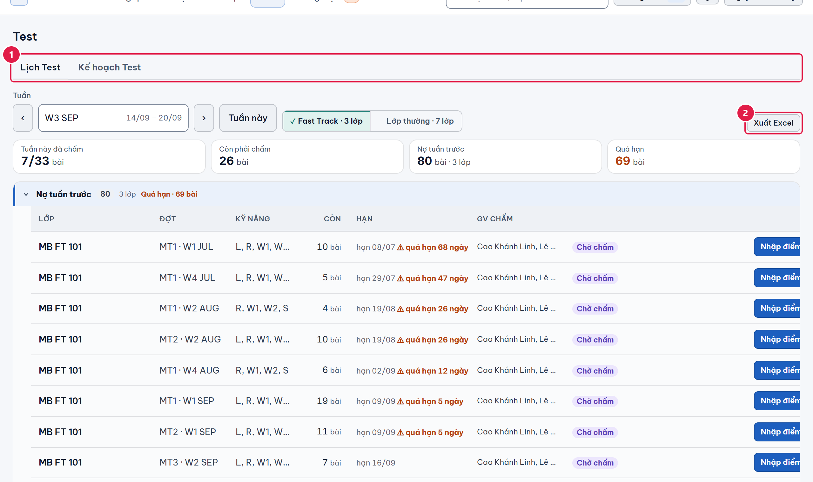
Test › Lịch Test (Quản lý)
1Hai tab: "Lịch Test" và "Kế hoạch Test" (tab này chỉ Quản lý có).
2"Xuất Excel" tải kết quả Test theo phạm vi của bạn.
Giống giáo viên, nhưng bạn thấy mọi lớp của chi nhánh (công tắc "Lớp tôi dạy | Tất cả"), có Xuất Excel, và có thêm tab Kế hoạch Test mà giáo viên không có.
3.2 Kế hoạch Test
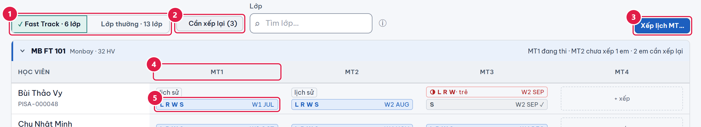
Test › Kế hoạch Test
1Công tắc khung: Fast Track hoặc Lớp thường.
2"Cần xếp lại (n)": học viên có kỹ năng vắng hoặc phần thi đã huỷ.
3"Xếp lịch MT…" xếp nhiều em một lần.
4Mỗi cột là một đợt Mock Test, ghi tuần thi.
5Chip kỹ năng: màu xanh dương = đã xếp, xám = đã thi, vàng = dời vì vắng, tím = chờ duyệt, gạch ngang = đã huỷ phần thi. Bấm chip để sửa.
Mỗi lớp là một dòng mở được; trong đó, mỗi hàng là một học viên và mỗi cột là một đợt Mock Test. Chip kỹ năng L R W S kèm tuần thi cho biết lịch của em ở đợt đó.
Màu chip
Nghĩa
Xanh dương
Đã xếp lịch
Xám, có dấu ✓
Đã thi xong
Vàng, "dời"
Đã dời vì vắng
Cam
Vắng, Quản lý cần xếp lại
Tím
Đề nghị dời đang chờ Quản lý duyệt
Viền đỏ, "trễ"
Quá hạn chấm
Gạch ngang
Phần thi đã huỷ
Nét đứt, "+ xếp"
Chưa xếp lịch
3.3 Sửa lịch của một em
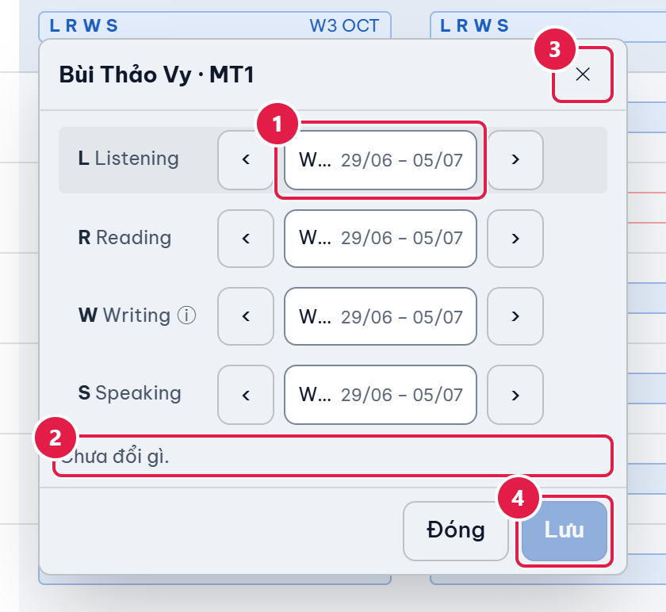
Hộp lịch kỹ năng của một đợt
1Mỗi kỹ năng một dòng: bấm ‹ › để đổi tuần thi.
2Dòng trạng thái: "Chưa đổi gì" cho tới khi bạn đổi một tuần.
3"Đóng" thoát mà không lưu.
4Bấm "Lưu" để ghi lịch; khi dời một tuần đã bắt đầu, web hỏi thêm lý do.
Bấm chip để mở hộp lịch của em. Chọn tuần cho từng kỹ năng, hoặc tích Bỏ khỏi đợt. Menu Thao tác khác có: Dời lịch thi, Dời hạn chấm, Báo vắng, Huỷ điểm. Ghi Lý do rồi bấm Lưu.
Luật cần nhớ
Dời lịch thi, dời hạn chấm, bỏ kỹ năng, xếp lịch MT, thi lại và huỷ lượt là việc của Quản lý ở Fast Track. (Lớp thường: GVCN và GVBM đúng môn dời được lịch môn mình.)
Dời khi tuần thi đã bắt đầu thì bắt buộc ghi lý do. Dời hạn chấm cần lý do từ 5 ký tự.
Thi lại: điểm cũ xoá khỏi ô nhưng vẫn giữ trong Lịch sử.
Huỷ cả lượt đóng mọi Case, PA quy chế và việc Phối hợp sinh từ lượt đó; các Case này ghi là "lượt đã huỷ", không tính thất bại.
Số MT liền mạch, tối đa MT8. Tuần đã qua chỉ để tạo MT lịch sử.
3.4 Xếp nhiều lớp một lần
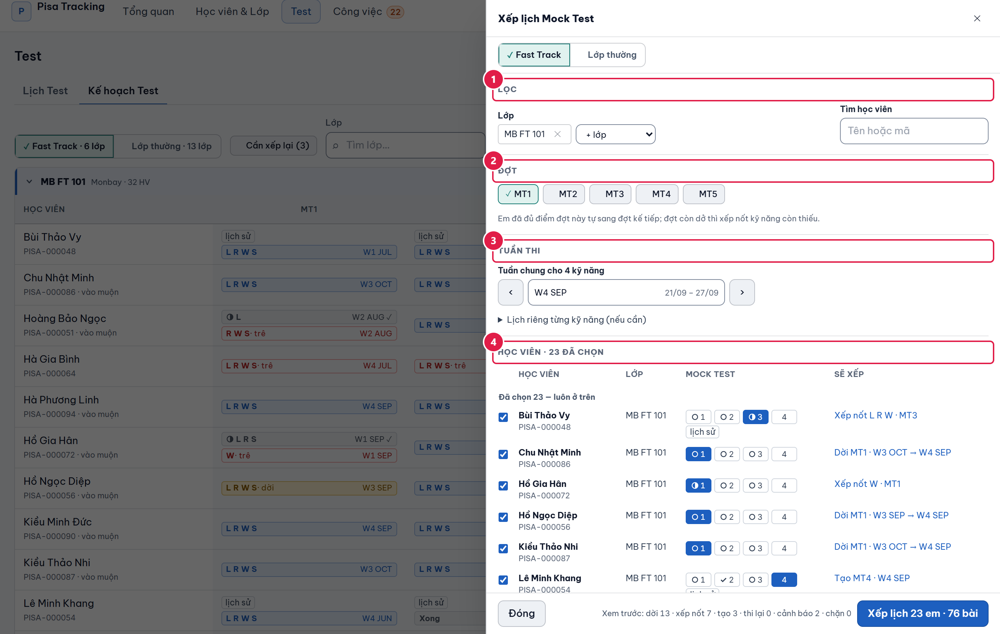
Panel "Xếp lịch Mock Test"
1Lọc theo lớp hoặc tìm học viên.
2Chọn đợt Mock Test cần xếp.
3"Tuần chung cho 4 kỹ năng", hoặc mở "Lịch riêng từng kỹ năng" nếu cần.
4Tích học viên; cột "Sẽ xếp" cho biết web sẽ Tạo, Xếp nốt, Dời hay Thi lại.
Bấm Xếp lịch MT…. Chọn lớp (hoặc tìm học viên), chọn đợt và tuần thi. Mặc định cả 4 kỹ năng thi cùng tuần; mở "Lịch riêng từng kỹ năng" nếu cần. Cột Sẽ xếp nói trước web sẽ làm gì cho từng em: Tạo lượt mới, Xếp nốt kỹ năng còn thiếu, Dời, hoặc Thi lại. Với lớp thường dùng Xếp lịch Test…, có bảng Xem trước với các nhãn Mới · Đổi · Giữ · Cảnh báo · Chặn.
3.5 Vắng và dấu "-" ở Fast Track
Giáo viên gõ "-" vào ô khi em không làm bài; GVCN hoặc bạn có thể Báo vắng qua menu (lý do từ 5 ký tự, từ Thứ Hai tuần thi). Sửa được đến hết Chủ nhật, điểm thật luôn thắng "-".
Luật cần nhớ
Hết Chủ nhật còn "-" thì kết luận Không dự thi. Lần 1: web tự dời sang tuần kế (nếu còn thi được) và báo GVCN cùng GVBM đúng kỹ năng.
Lần 2 thành đề nghị chờ bạn trong hộp Chờ duyệt (phân loại "Lịch thi"). Hạn hết Chủ nhật tuần gửi. Bạn từ chối (lý do từ 3 ký tự) hoặc để hết hạn thì phần thi bị huỷ; điểm các phần khác được giữ.
Chỉ Quản lý khôi phục phần đã huỷ và sửa kết luận "Không dự thi" (ghi đè trực tiếp).
Writing chỉ chốt khi cả W1 và W2 đều "-", tính một lần.
Phần 4. Hộp Chờ duyệt
4.1 Đọc hộp
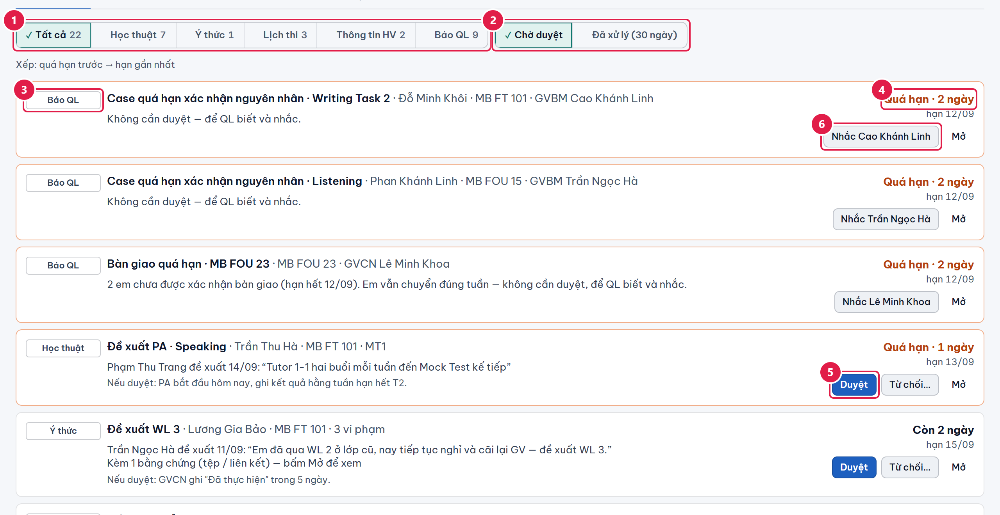
Công việc › Chờ duyệt
1Năm phân loại: Học thuật · Ý thức · Lịch thi · Thông tin HV · Báo QL.
2"Chờ duyệt" hoặc "Đã xử lý (30 ngày)".
3Thẻ Báo QL chỉ để biết và nhắc, không có nút Duyệt.
4Hạn của thẻ; thẻ quá hạn viền cam và xếp lên đầu.
5"Duyệt" và "Từ chối…" ở chân thẻ.
6"Nhắc {tên giáo viên}" gửi thông báo, không đổi trạng thái thẻ.
Vào Công việc › Chờ duyệt. Mọi việc "xin Quản lý quyết" đều là một thẻ ở đây, không có chỗ duyệt nào khác (trừ duyệt tài khoản đăng ký, nằm ở Quản trị hệ thống). Thẻ xếp theo thứ tự quá hạn trước, hạn gần nhất sau.
Phân loại
Thẻ gồm
Hạn
Học thuật
Đề xuất PA · Xin ý kiến · Không cần theo dõi · Kế hoạch bổ trợ
5 ngày (Kế hoạch bổ trợ 3 ngày)
Ý thức
Xử lý Ý thức cần duyệt (WL 3, Meeting CX/GĐCN, Đình chỉ học tạm thời, Khác)
5 ngày
Lịch thi
Dời lịch thi lần 2 · khôi phục phần đã huỷ
Hết Chủ nhật tuần gửi
Thông tin HV
Đề xuất sửa (Target, lộ trình, lịch MT, khác) · Đề xuất chuyển lớp
5 ngày
Báo QL
Case quá hạn xác nhận nguyên nhân · Ý thức quá hạn · Bàn giao quá hạn · Lớp hết khoá còn em chưa có lệnh · Mini Test chưa đạt · Cuối khoá dời quá hạn
Không hạn
Luật cần nhớ
Chỉ Quản lý và Quản trị hệ thống duyệt. Giáo viên (kể cả GVCN) không bao giờ duyệt.
Thẻ Báo QL không có nút Duyệt: bạn chỉ Nhắc giáo viên giữ việc. Thẻ tự đóng khi việc gốc xong.
Thẻ quá hạn chỉ báo cho bạn và Quản trị, không tự đóng. Riêng thẻ lịch thi: hết hạn thì phần thi bị huỷ.
Việc quét thẻ quá hạn và huỷ phần thi hết hạn chỉ chạy khi có người mở web, nên có thể chậm đến lúc ai đó vào web.
4.2 Duyệt, từ chối, trả lời
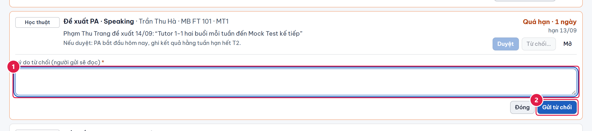
Thẻ đang mở ô "Từ chối…" (bắt buộc lý do)
1Ô lý do: bắt buộc, ít nhất 3 ký tự; giáo viên sẽ đọc câu này.
2Bấm "Gửi từ chối" để từ chối; Esc để bỏ.
Duyệt: một cú bấm. Với vài loại (dời lịch, chuyển lớp) nút là Duyệt… và mở thêm bước chọn tuần hoặc panel điền sẵn.
Từ chối…: mở ô lý do ngay trong thẻ. Lý do bắt buộc, từ 3 ký tự; giáo viên đọc câu này. Enter gửi, Esc bỏ.
Trả lời…: dành cho thẻ Xin ý kiến (giáo viên xin hỗ trợ khi ghi kết quả PA). Trả lời bằng chữ; kèm nút + Thêm PA nếu muốn thêm phương án.
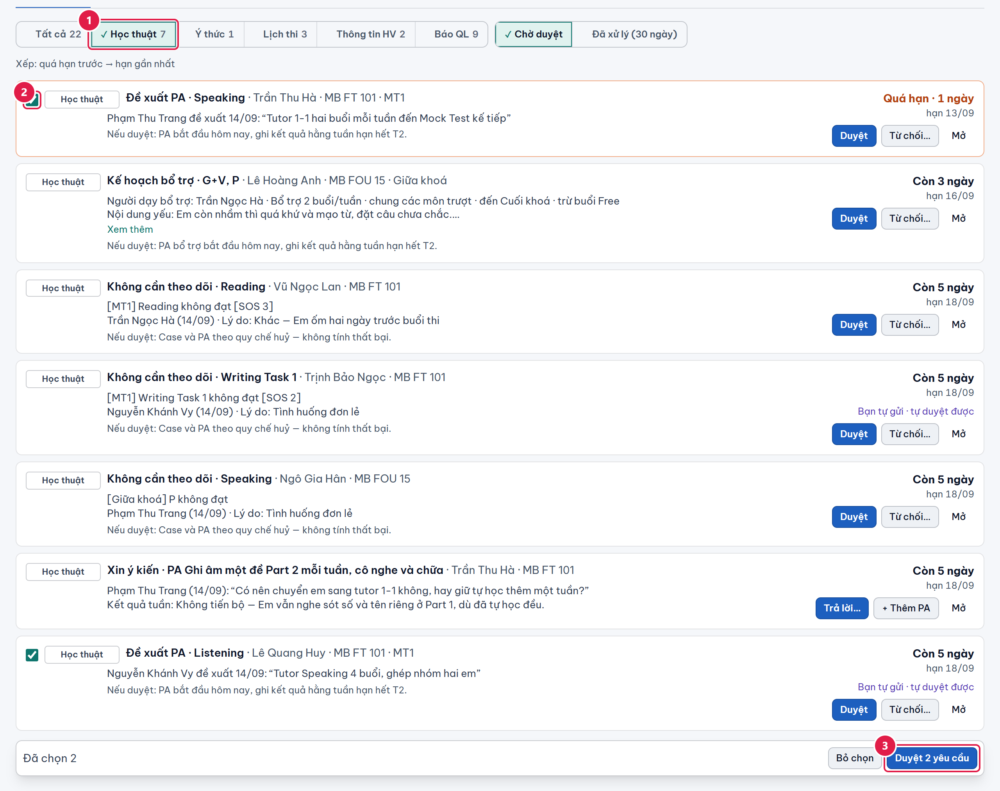
Duyệt hàng loạt (lọc một loại thẻ)
1Lọc một phân loại trước: duyệt hàng loạt chỉ chạy khi mọi thẻ cùng một loại.
2Tích ô đầu mỗi thẻ cần duyệt.
3"Duyệt n yêu cầu" ở thanh dưới màn hình.
Duyệt hàng loạt chỉ dùng được khi bạn đang lọc một phân loại và các thẻ cùng một loại cho phép (Đề xuất PA, Dời lịch thi). Tích ô đầu thẻ, bấm Duyệt n yêu cầu ở thanh dưới.
4.3 Từng loại thẻ nói gì
Thẻ
Nếu bạn duyệt / từ chối
Không cần theo dõi (SOS)
Duyệt: Case và mọi PA chưa xong huỷ (không tính thất bại, ngoài hiệu quả PA). Từ chối: Case về "Chờ xác nhận nguyên nhân", giáo viên có hạn mới 3 ngày.
Đề xuất PA (ngoài danh mục)
Duyệt: PA bắt đầu ngay, giáo viên ghi kết quả hằng tuần. Từ chối: giáo viên nhận lý do.
Kế hoạch bổ trợ (Giữa khoá lớp thường)
Duyệt: PA bổ trợ chạy. Từ chối: giáo viên nộp lại, hạn mới 3 ngày.
Xử lý Ý thức cần duyệt
Cần bằng chứng (tệp hoặc liên kết). Duyệt: GVCN có 5 ngày bấm Đã thực hiện. Từ chối: vi phạm về "Cần xử lý", bậc giữ nguyên.
Dời lịch thi lần 2
Duyệt: chọn tuần đích (mặc định tuần chưa bắt đầu gần nhất hợp luật). Từ chối hoặc hết hạn: huỷ phần thi.
Đề xuất sửa
Duyệt: mở panel sửa tương ứng để bạn đổi. Từ chối: ghi lý do.
Đề xuất chuyển lớp
"Duyệt…" mở panel Chuyển lớp điền sẵn; bấm Duyệt và ra lệnh mới thành lệnh.
Lưu ýNếu bạn vừa là Quản lý vừa dạy lớp và tự gửi thẻ, bạn tự duyệt được. Thẻ ghi "tự duyệt", có nhật ký và báo Quản trị hệ thống.
4.4 Lớp thường: bài cứ "-" nhiều tuần
Chưa làm đủ trên webLuật đã chốt ngày 02/10: ở lớp thường, bài còn "-" thì dời sang tuần sau, lặp lại, cho đến khi có điểm hoặc Quản lý xác nhận huỷ kết quả môn đó. Hiện web mới dời khi giáo viên ghi "-" mỗi tuần, chưa có nút Quản lý huỷ kết quả môn, và khi dời bị chặn vì vướng đợt kế (Giữa khoá không qua được tuần Cuối khoá) thì giáo viên bị kẹt, phải nhờ bạn dời lịch ở Kế hoạch Test. Sổ tay sẽ bổ sung khi tính năng này lên web.
Phần 5. Theo dõi chuyên môn
5.1 Việc quá hạn của giáo viên
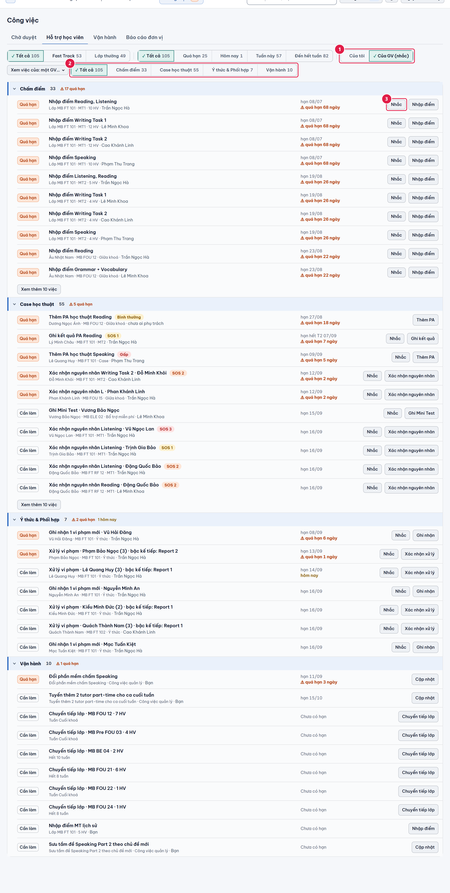
Công việc › Hỗ trợ học viên (Quản lý)
1"Của tôi" hoặc "Của GV (nhắc)": xem việc của giáo viên để nhắc.
2Lọc theo bốn nhóm việc.
3"Nhắc" gửi thông báo cho giáo viên giữ việc; sau đó đổi thành "✓ Đã nhắc".
Ở Công việc › Hỗ trợ học viên, đổi Việc của ai sang Của GV (nhắc) để thấy việc của giáo viên. Lọc Quá hạn và bấm Nhắc trên dòng việc; nút đổi thành "✓ Đã nhắc". Từ Tổng quan, Xem và nhắc đưa bạn thẳng tới đây đã lọc sẵn.
5.2 Phân tích: năm góc nhìn
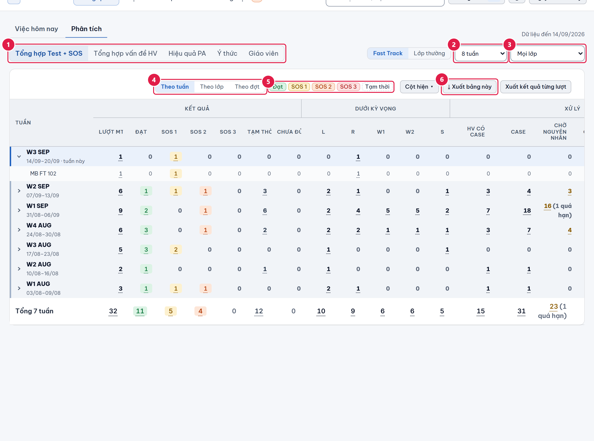
Phân tích › Tổng hợp Test + SOS
1Năm góc nhìn: Tổng hợp Test + SOS · Tổng hợp vấn đề HV · Hiệu quả PA · Ý thức · Giáo viên.
2Khoảng thời gian: 4 tuần, 8 tuần, 12 tuần hoặc 6 tháng.
3Lọc một lớp hoặc "Mọi lớp".
4Cách xếp dòng: theo tuần, lớp, đợt hoặc chi nhánh.
5Chú giải màu: Đạt · SOS 1 · SOS 2 · SOS 3 · Tạm thời.
6"Xuất bảng này" tải bảng ra Excel.
Mở Tổng quan › Phân tích. Chọn góc nhìn ở hàng trên; bộ lọc bên phải (khung Fast Track hoặc Lớp thường, khoảng thời gian, lớp) áp cho cả năm góc, trừ ghi chú riêng bên dưới.
Tổng hợp Test + SOS (lớp thường: Tổng hợp Test): kết quả theo tuần, lớp, đợt hoặc chi nhánh. Bấm số để mở danh sách; Xuất bảng này tải Excel.
Tổng hợp vấn đề HV: nguyên nhân học viên gặp theo kỹ năng; chọn "Lỗi chính + phụ" hay "Chỉ lỗi chính".
Hiệu quả PA: loại phương án nào giúp học viên cải thiện.
Ý thức: học viên cần chú ý và lớp nhiều vi phạm.
Giáo viên: mục 5.4.
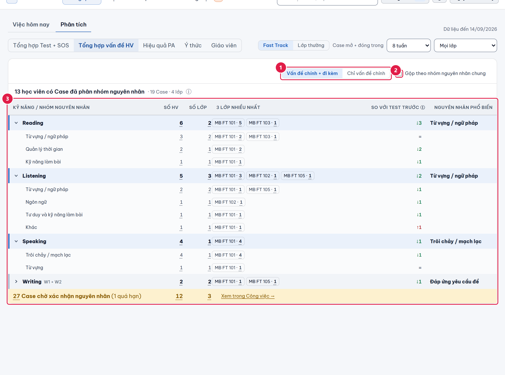
Phân tích › Tổng hợp vấn đề HV
1"Lỗi chính + phụ" hoặc "Chỉ lỗi chính".
2Công tắc "Gộp theo loại lỗi chung".
3Bảng kỹ năng × nhóm nguyên nhân: số học viên, số lớp và số theo từng tháng; bấm số để xem danh sách.
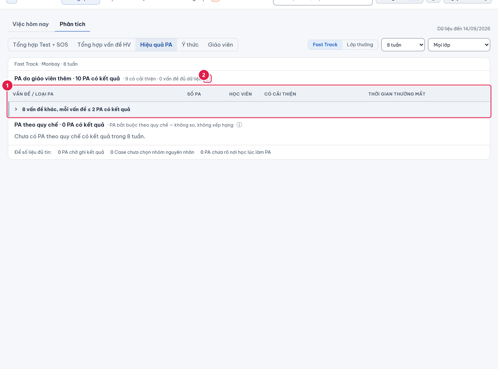
Phân tích › Hiệu quả PA
1Mỗi dòng là một loại PA: số PA, số học viên, tỷ lệ có cải thiện và thời gian tới cải thiện.
2Bấm "Cách đọc" để xem web tính và đọc bảng thế nào; nhãn "Nên dùng" chỉ hiện khi đủ mẫu, "Ít dữ liệu" là chưa đủ để kết luận.
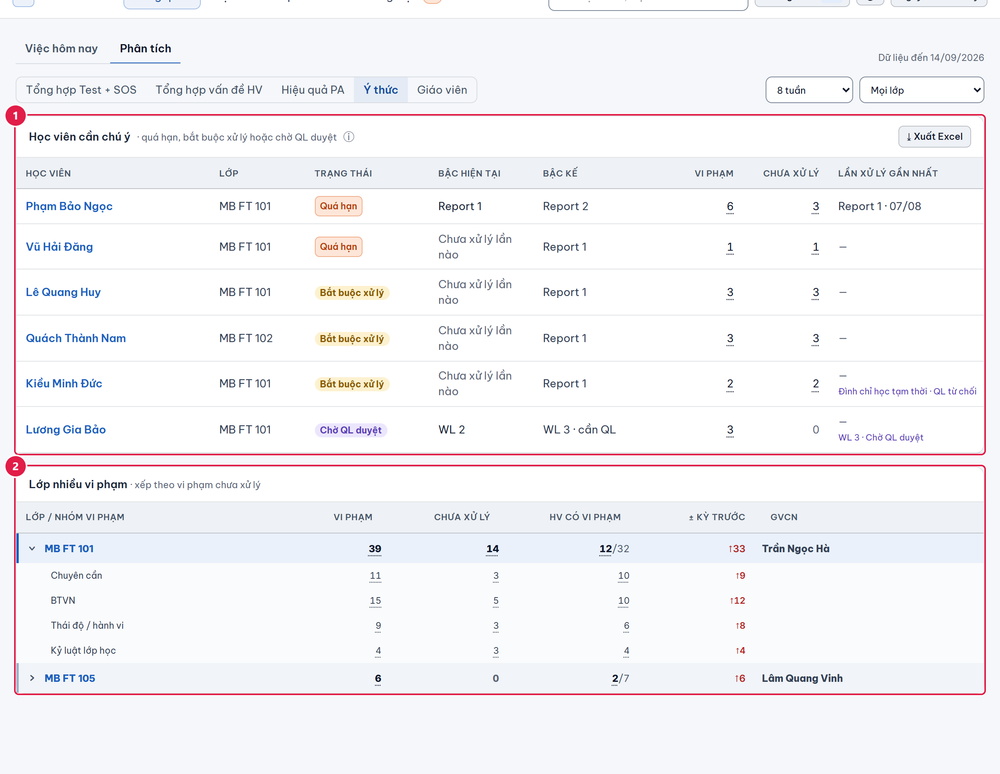
Phân tích › Ý thức
1"Học viên cần chú ý": bậc hiện tại, bậc kế, số vi phạm chưa xử lý và lần xử lý gần nhất.
2"Lớp nhiều vi phạm": xếp theo số vi phạm chưa xử lý.
5.3 Đọc số cho đúng
Luật cần nhớ
Đọc n/N trước, phần trăm sau. Mẫu nhỏ (dưới 5 mục) không tô màu và không dùng để kết luận.
"Chưa đủ dữ liệu" nằm ngoài tỷ lệ, không tính là thất bại.
Ý thức nằm ngoài mọi bảng hiệu quả hỗ trợ. Số Ý thức đếm theo hành động thật: một Report gộp ba vi phạm là một Report.
PA theo quy chế tách riêng khỏi PA do giáo viên thêm, không xếp hạng và không có nhãn "Nên dùng". Hiệu quả PA quy chế xếp theo mức SOS hiện tại của Case.
Case huỷ vì "không cần theo dõi" nằm ngoài mẫu số.
5.4 Phân tích giáo viên và hồ sơ giáo viên
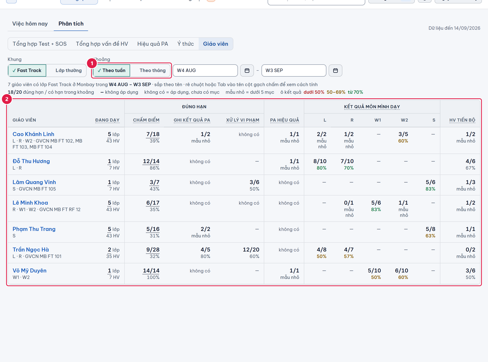
Phân tích › Giáo viên
1Xem theo tuần hoặc theo tháng.
2Mỗi ô ghi n/N và phần trăm; màu chỉ ở ô kết quả, dưới 5 mục thì không tô màu. Bảng không xếp hạng, sắp theo tên.
Mỗi hàng là một giáo viên, các cột là: Chấm điểm đúng hạn · Ghi kết quả PA đúng hạn · Xử lý vi phạm đúng hạn (chỉ GVCN) · PA hiệu quả · Kết quả theo môn · HV tiến bộ · Đang dạy. Ô ghi n/N · %; màu chỉ ở ô kết quả: đỏ dưới 50 %, vàng 50–69 %, xanh từ 70 %. Có hàng "Chưa phân công" để tổng khớp. Bấm ô để mở danh sách ô điểm (lọc Tất cả | Trễ).
Luật cần nhớ
Không KPI, không xếp hạng, sắp theo tên. Mặc định xem 4 tuần, tối đa 13 tuần.
Đúng hạn = lần nhập điểm đầu tiên không muộn hơn hạn. Quá hạn = tuần thi đã hết và đã qua hạn.
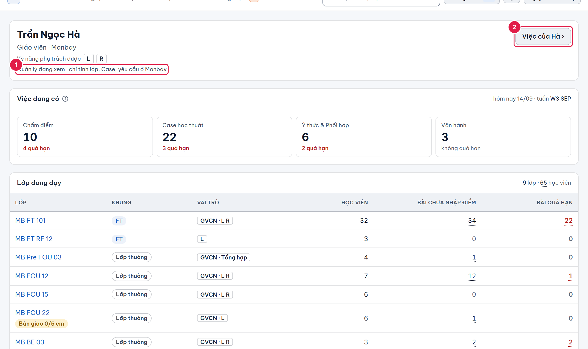
Hồ sơ giáo viên (Quản lý xem)
1Dòng nhắc bạn đang xem với tư cách Quản lý, chỉ tính lớp, Case, yêu cầu trong chi nhánh.
2"Việc của {tên} ›" mở danh sách việc của giáo viên.
Bấm tên giáo viên (ở bảng lớp hoặc bảng "Theo giáo viên") để mở hồ sơ giáo viên: năm khối chỉ-xem. Dòng "Quản lý đang xem" nhắc rằng chỉ tính lớp, Case và yêu cầu trong chi nhánh của bạn. Nút Việc của {tên} › mở danh sách việc để nhắc. Bạn chỉ xem được giáo viên có vai giáo viên trong chi nhánh mình.
5.5 Cuối khoá lớp thường
Cuối khoá không sinh Case. Dải % tổng: < 50 · 50–59 · 60–69 · ≥ 70 (Pass). Quyết định nằm ở lệnh chuyển lớp (mục 2.6).
Sau khi em chuyển lên: web tạo Case "Cuối khoá {chương trình} · {môn} không đạt" kèm PA bổ trợ miễn phí và Mini Test một lần. Mini Test từ 70 % thì Case tự hoàn thành; dưới 70 % thì Case mở và sinh thẻ Báo QL. Sửa điểm Mini Test chỉ Quản lý, có lý do. Bổ trợ miễn phí không tính lương giáo viên.
BE/ELE lên FT: chỉ Quản lý đánh dấu Đạt / Không đạt kỳ vọng đầu ra. Nguyên nhân "Trung tâm" thì tạo Case FT và PA Tutor 10 buổi mỗi kỹ năng; nguyên nhân "Học sinh" chỉ ghi chú.
5.6 Thông báo bạn nhận
Chuông ở thanh trên chia Cần làm và Để biết. Quản lý nhận: thẻ mới trong Chờ duyệt, thẻ quá hạn duyệt, và tin "để biết" khi GVCN xử lý Ý thức ở bậc WL 1, Report 4 + Meeting hoặc WL 2. Web chỉ báo trong ứng dụng, không gửi email hay Zalo.
Phần 6. Vận hành và Báo cáo đơn vị
6.1 Vận hành
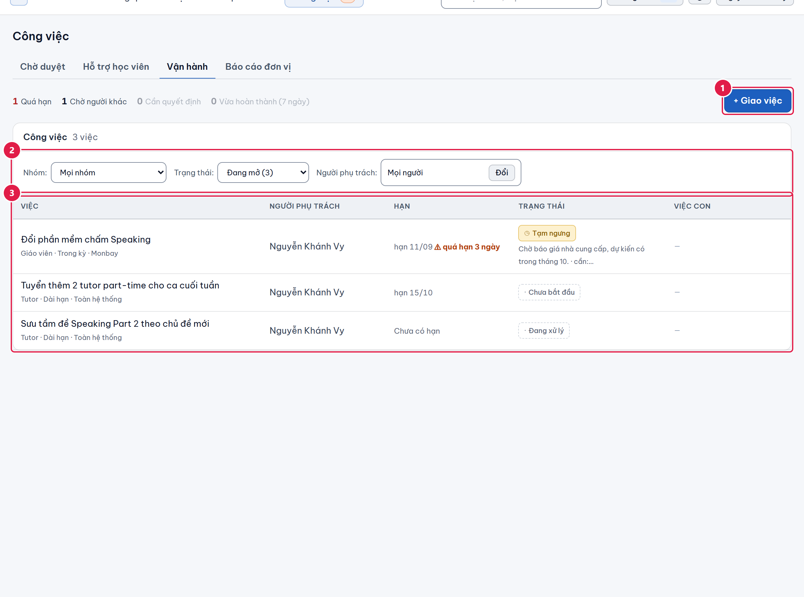
Công việc › Vận hành
1Nút "+ Giao việc" tạo việc mới, có thể giao cho người ngoài hệ thống.
2Bộ lọc Nhóm, Trạng thái, Người phụ trách.
3Bảng việc: người phụ trách, hạn, trạng thái (Cần làm · Đang làm · Tạm ngưng · Đã dừng · Xong) và tiến độ việc con.
Vào Công việc › Vận hành. Bốn con số ở đầu trang là bốn câu hỏi: bao nhiêu việc quá hạn, chờ người khác, cần quyết định, vừa hoàn thành (7 ngày); bấm số để lọc. Bảng có cột người phụ trách (có thể là người ngoài hệ thống), hạn, trạng thái và tiến độ việc con.
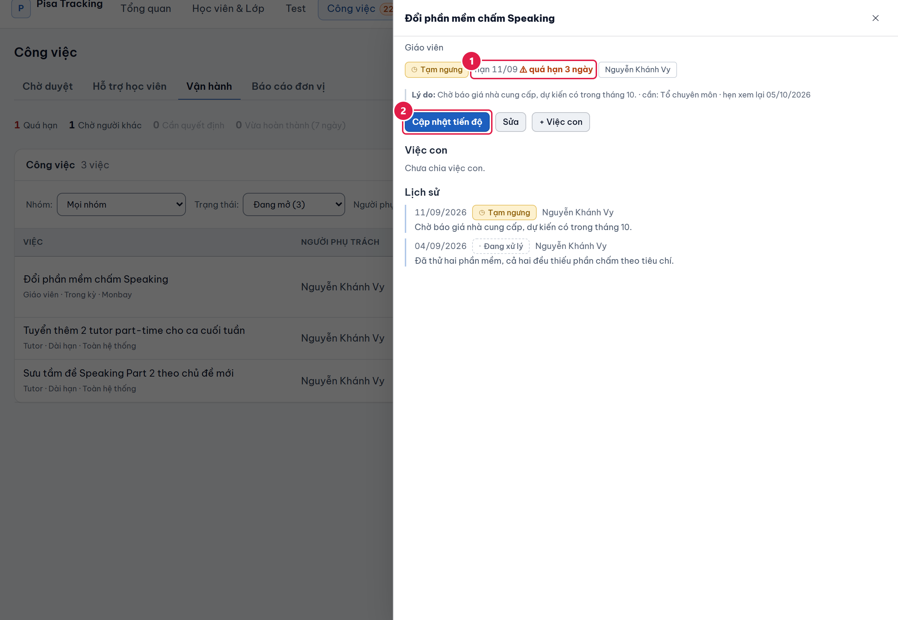
Ngăn một công việc
1Hạn của việc, và nhãn quá hạn nếu có.
2"Cập nhật tiến độ": đổi trạng thái; Tạm ngưng thì phải ghi lý do và ngày xem lại.
Bấm một dòng để mở ngăn việc: hạn và lịch sử dời hạn, việc con, nhật ký cập nhật. Cập nhật tiến độ đổi trạng thái: Cần làm · Đang làm · Tạm ngưng · Đã dừng · Xong. Chọn Tạm ngưng thì phải ghi lý do, người cần giúp và ngày xem lại. + Công việc tạo việc mới, + Công việc con chia nhỏ việc.
6.2 Báo cáo đơn vị hằng tuần
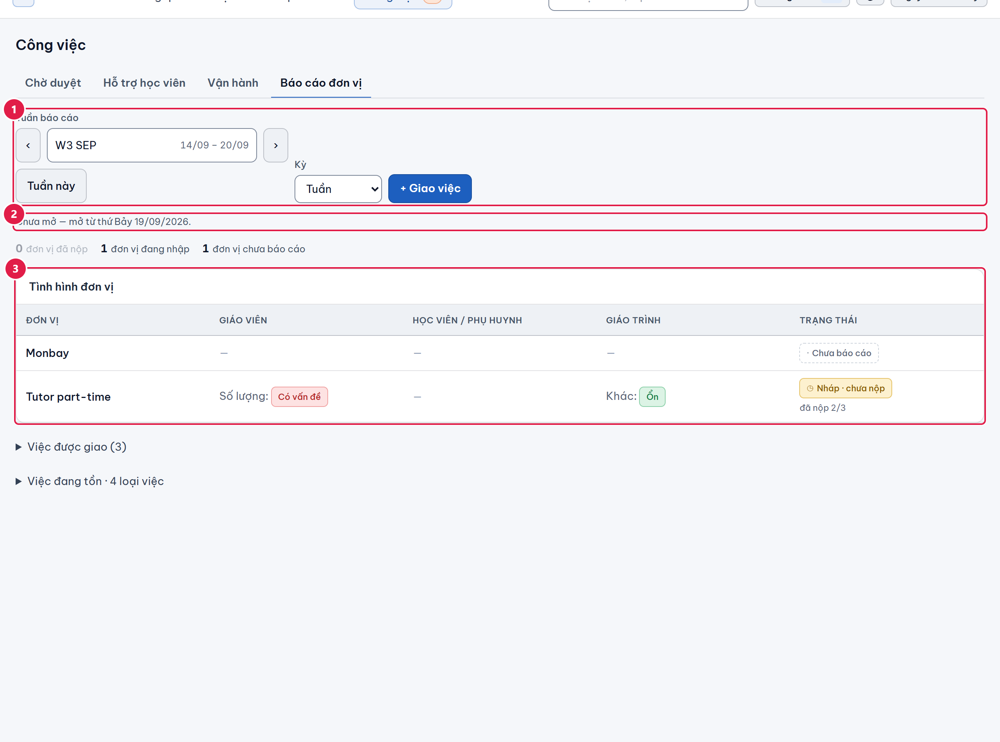
Công việc › Báo cáo đơn vị
1Chọn tuần báo cáo và kỳ (tuần hoặc tháng).
2Cửa sổ nộp: từ Thứ Bảy đến hết Chủ nhật. Trước đó "Chưa mở"; sau đó khoá và chỉ Quản trị hệ thống mở lại được.
3Ma trận đơn vị × hạng mục; mỗi ô là Ổn, Cần theo dõi hoặc Có vấn đề. Bấm ô để mở.
Chọn Tuần báo cáo và Kỳ (Tuần hoặc Tháng; Tháng chỉ để đọc).
Cửa sổ nộp mở từ Thứ Bảy đến hết Chủ nhật. Sau đó cửa sổ khoá và chỉ Quản trị hệ thống mở lại được.
Bấm một ô của bảng Tình hình đơn vị, chọn mức Ổn · Cần theo dõi · Có vấn đề, ghi bằng chứng cụ thể (chuyện gì, lớp nào, buổi nào), nối với một việc nếu cần, rồi Lưu nháp hoặc Nộp.
Ba số lọc ở đầu cho biết bao nhiêu đơn vị đã nộp, đang nhập, chưa báo cáo. Nút + Giao việc ở khối "Việc đã giao" giao việc cho đơn vị hoặc người phụ trách.
Phần 7. Khi dữ liệu sai
Cần sửa
Cách làm
Điểm đã nhập sai
Quản lý sửa mọi lúc, kể cả sau khi đợt hoàn tất. Ghi lý do từ 5 ký tự; sửa được ghi vào nhật ký. Huỷ điểm ở menu Thao tác khác.
Lịch thi sai
Dời lịch ở Kế hoạch Test (mục 3.3); có lý do nếu tuần đã bắt đầu.
Kết luận "Không dự thi" sai
Chỉ Quản lý sửa, ghi đè trực tiếp. Khôi phục phần thi đã huỷ cũng chỉ Quản lý.
Target hoặc lộ trình sai
⋮ › Lộ trình, ghi lý do và ngày hiệu lực (mục 2.3).
Lệnh chuyển lớp sai
Bấm Huỷ lệnh trên lệnh còn "chờ", rồi ra lệnh lại.
Mini Test nhập sai
Chỉ Quản lý sửa, có lý do.
Xuất Excel
Quản lý (theo phạm vi) và GVCN lớp mình xuất được; GVBM không.
Xoá học viên, lớp đã kết thúc, tài khoản
Chỉ Quản trị hệ thống.
Phần 8. Hỏi nhanh
Tình huống
Cách xử lý
Không bấm được "Chuyển lớp…" của một em
Em đang Tạm dừng. Bấm Quay lại học trước.
Nút "Tạo lớp" mờ
Phân công vi phạm luật (một ô hai người, GVCN không dạy môn nào). Di chuột vào nút để xem.
Thẻ Báo QL không có nút Duyệt
Đúng thiết kế. Bấm Nhắc giáo viên; thẻ tự đóng khi việc xong.
Giáo viên báo gõ "-" bị chặn ở lớp thường
Dời vướng đợt kế. Dời lịch giúp ở Kế hoạch Test (mục 4.4).
Không thấy tab Kế hoạch Test
Tab này chỉ Quản lý và Quản trị có.
Thẻ quá hạn mà không thấy thông báo
Việc quét chỉ chạy khi có người mở web; mở web là thông báo sinh ra.
Không xem được hồ sơ một Quản lý khác
Hồ sơ giáo viên chỉ mở cho tài khoản có vai giáo viên.
Phụ lục A. Bảng hạn
Việc
Hạn
Quản lý duyệt một thẻ
5 ngày (kế hoạch bổ trợ 3 ngày; dời lịch lần 2 hết Chủ nhật tuần gửi; Báo QL không hạn)
Chấm bài Fast Track
Hết Thứ Tư tuần kế tiếp tuần thi của kỹ năng đó
Chấm bài lớp thường
Hết Chủ nhật của tuần thi
Sửa dấu "-" (Fast Track)
Hết Chủ nhật; chốt sáng Thứ Hai
Xác nhận nguyên nhân SOS và xác nhận PA
3 ngày kể từ ngày Case ra đời
Ghi kết quả PA hằng tuần
Hết Thứ Hai tuần kế
Ý thức: xử lý
5 ngày; sau khi bạn duyệt: 5 ngày để GVCN bấm Đã thực hiện
Bàn giao khi chuyển lớp
GVBM 2 ngày · GVCN 3 ngày kể từ ngày ra lệnh
Mini Test sau Cuối khoá
Chủ nhật tuần cuối PA, cộng 2 ngày
Cửa sổ nộp Báo cáo đơn vị
Thứ Bảy đến hết Chủ nhật
Phụ lục B. Ai làm được gì
Việc
Ai làm
Nhập điểm
GVBM đúng ô; GVCN ô môn mình dạy; Quản lý mọi ô
Sửa điểm đã nhập
GVBM đúng ô trước khi đợt hoàn tất; Quản lý mọi lúc